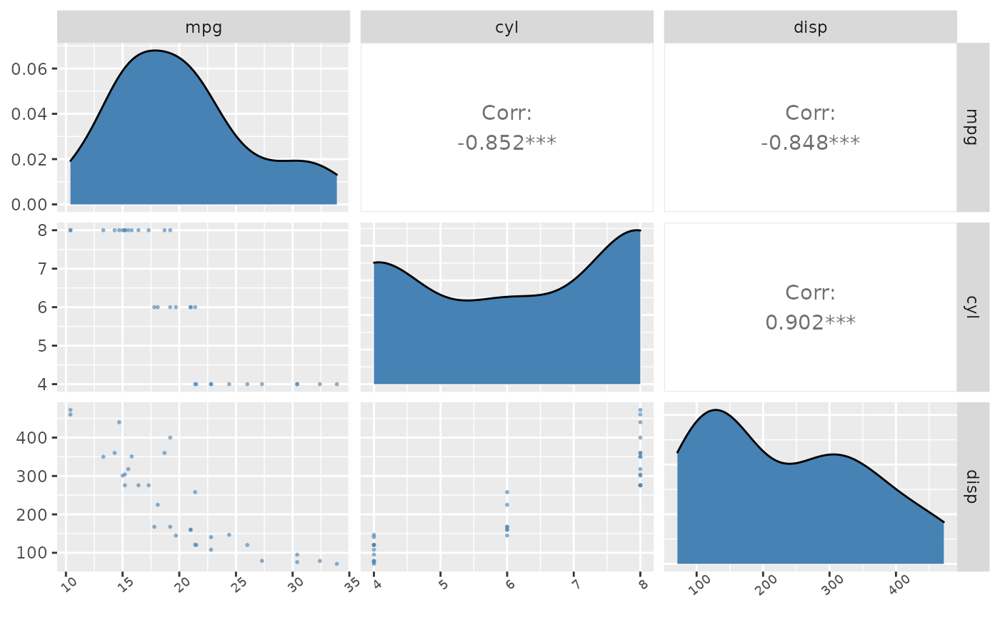

project_package-vignette
project_package-vignette.RmdIntroduction to projectPackage
The goal of projectPackage is to provide simplified functions to achieve the goal of data preprocessing for exploratory data analyses. The projectPackage makes the following steps quick and easy:
- Removing certain columns from a data set
- Creating a ggpairs correlation plot
- Creating a recipe for knn model
This document introduces you all of the tools mentioned above as well as examples of how to apply them to data frames and use them in different real-world scenarios.
Data: mtcars
For the purpose of demonstration, we will use a basic data set called mtcars. This data set has 11 columns, 32 rows and is documented in ?mtcars. Note that mtcars is a data frame and below is the first 6 rows.
#> mpg cyl disp hp drat wt qsec vs am gear carb
#> Mazda RX4 21.0 6 160 110 3.90 2.620 16.46 0 1 4 4
#> Mazda RX4 Wag 21.0 6 160 110 3.90 2.875 17.02 0 1 4 4
#> Datsun 710 22.8 4 108 93 3.85 2.320 18.61 1 1 4 1
#> Hornet 4 Drive 21.4 6 258 110 3.08 3.215 19.44 1 0 3 1
#> Hornet Sportabout 18.7 8 360 175 3.15 3.440 17.02 0 0 3 2
#> Valiant 18.1 6 225 105 2.76 3.460 20.22 1 0 3 1Demonstration of basic functions in projectPackage
1. Dropping columns with data_cleaning()
Often when you work with large data sets, there will be columns that are redundant or not of interest. In that case, you can use our function data_cleaning() to drop those columns. For details on how to use the function, check out help(data_cleaning).
- dropping a single column
mpgfrom mtcars
head(data_cleaning(data, "mpg"))
#> cyl disp hp drat wt qsec vs am gear carb
#> Mazda RX4 6 160 110 3.90 2.620 16.46 0 1 4 4
#> Mazda RX4 Wag 6 160 110 3.90 2.875 17.02 0 1 4 4
#> Datsun 710 4 108 93 3.85 2.320 18.61 1 1 4 1
#> Hornet 4 Drive 6 258 110 3.08 3.215 19.44 1 0 3 1
#> Hornet Sportabout 8 360 175 3.15 3.440 17.02 0 0 3 2
#> Valiant 6 225 105 2.76 3.460 20.22 1 0 3 1As you can see above, the column mpg has been dropped from the data frame.
- dropping multiple columns from mtcars
head(data_cleaning(data, c("mpg","disp","qsec")))
#> cyl hp drat wt vs am gear carb
#> Mazda RX4 6 110 3.90 2.620 0 1 4 4
#> Mazda RX4 Wag 6 110 3.90 2.875 0 1 4 4
#> Datsun 710 4 93 3.85 2.320 1 1 4 1
#> Hornet 4 Drive 6 110 3.08 3.215 1 0 3 1
#> Hornet Sportabout 8 175 3.15 3.440 0 0 3 2
#> Valiant 6 105 2.76 3.460 1 0 3 1Again, columns mpg, disp, and qsec have been dropped.
- When an inappropriate column name is inputted, an error will occur.
For instance, if I accidentally used the wrong column name mpf instead of mpg. The function will kindly produce an error.
data_cleaning(data, "mpf") will produce the following message: “Error in data_cleaning(data,”mpf“) : column name does not exist in the data frame”
2. Creating a ggpairs correlation plot using correlation_graph()
Often times visualizations are needed to better understand the raw/modified data. Data visualization helps in the breakdown of complex problems by transforming data into a more understandable format and showing trends and outliers. A good visualization tells a story by reducing noise from data and emphasizing the most important facts.
We know that GGally’s ggpairs() function can create a correlation matrix for us, however, the plot can be hard to read if there is a lot of data. Additionally, the plot can look a bit boring – lacking colour. The correlation_graph() function solves those problems for us.
For details on how to use the function, check out help(correlation_graph).
#> Registered S3 method overwritten by 'GGally':
#> method from
#> +.gg ggplot2
3. Creating a recipe for knn model using recipe_scale_center()
If we want to make a model, we have to first create a recipe specifying a formula and any additional steps we want to perform; and, more often than not, we want to scale and center the data. So recipe_scale_center() creates a recipe and also scales and centers all the predictors in the given formula.
For example, we can create a recipe using mpg has the target and hp and cyl as the predictors.
recipe_scale_center(data, mpg ~ hp + cyl)
#> Recipe
#>
#> Inputs:
#>
#> role #variables
#> outcome 1
#> predictor 2
#>
#> Operations:
#>
#> Centering for recipes::all_predictors()
#> Scaling for recipes::all_predictors()